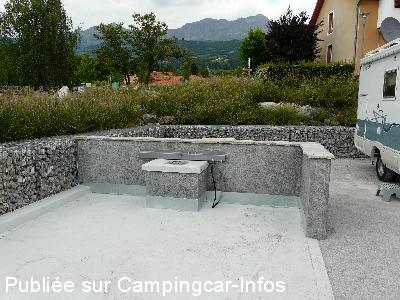
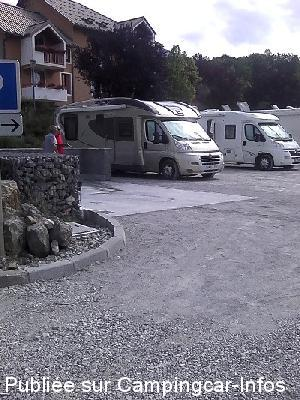
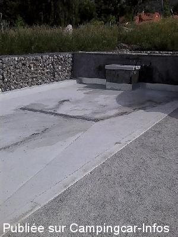
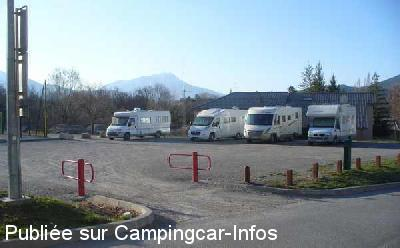

ASN = Aire de services avec stationnement nuit possible de :
CHORGES
(N° 666)
Accès/adresse :
Place du Champ de Foire
05230 CHORGES
05230 CHORGES
Latitude : (Nord) 44.54601° Décimaux ou 44° 32′ 45′′
Longitude : (Est) 6.28008° Décimaux ou 6° 16′ 48′′
Tarif : 2015
Stationnement : 5 €
Encaissement par la police municipale
Type de borne : Autre
Services :


Tous les commerces à proximité
Autres informations :
15 emplacements
Parking calme avec peu d'ombre
A 15 mn du lac de Serre-Ponçon et 30 mn de Gap.

Le 09/06/2015 par Daniel 34

Le 08/06/2015 par didier84

Le 08/06/2015 par didier84

Le 26/03/2011 par Dan 83
de
lhuissier henri
le 04/07/2015 :
§De passage a chorges 21/06/2015 l,aire de camping est bien payent la police passe pour encaisser les 5E pour 24h
henri et denise
§De passage a chorges 21/06/2015 l,aire de camping est bien payent la police passe pour encaisser les 5E pour 24h
henri et denise
de
Daniel 34
le 09/06/2015 :
De passage le 2 juin 2015, nous avons quasiment inauguré la dalle de vidange. Nous avions très peur de la "salir"
De passage le 2 juin 2015, nous avons quasiment inauguré la dalle de vidange. Nous avions très peur de la "salir"
de
didier84
le 08/06/2015 :
Bonjour,je suis retourné sur cette aire,d'ou mes deux photos,mais nouvelle remarque,,,l'aire est plus petite qu'avant,environ une quinzaine d'emplacements et un camping-cariste sur place m'a dit que l'aire risque de passer payante (5euros)mais à vérifier l'avenir nous le dira..Toujours les WC publics et le marché de Chorges le Dimanche matin..
Bonjour,je suis retourné sur cette aire,d'ou mes deux photos,mais nouvelle remarque,,,l'aire est plus petite qu'avant,environ une quinzaine d'emplacements et un camping-cariste sur place m'a dit que l'aire risque de passer payante (5euros)mais à vérifier l'avenir nous le dira..Toujours les WC publics et le marché de Chorges le Dimanche matin..
de
didier84
le 05/06/2015 :
§ Bonjour,en ce moment en ballade dans le 05,d'un coup de scooter nous sommes allés à Chorges,grosse surprise,agréable,il y a maintenant sur ce parking tous les services gratuits,eau,aire vidange eau grise et vide cassette,malheureusement je n'avais pas avec moi mon appareil photo mais je peux vous assurer que l'aire de service est très bien faite,merci à la municipalité..
§ Bonjour,en ce moment en ballade dans le 05,d'un coup de scooter nous sommes allés à Chorges,grosse surprise,agréable,il y a maintenant sur ce parking tous les services gratuits,eau,aire vidange eau grise et vide cassette,malheureusement je n'avais pas avec moi mon appareil photo mais je peux vous assurer que l'aire de service est très bien faite,merci à la municipalité..
de
lefevre guy
le 12/10/2014 :
Tres bien prés du centre ville, aire calme avec toutes les commodités Guy
Tres bien prés du centre ville, aire calme avec toutes les commodités Guy
de
clau
le 13/09/2014 :
Parking avec WC. Terrain de basket idéal pour les enfants.
Calme et 15 Cc sans souci.
Parking avec WC. Terrain de basket idéal pour les enfants.
Calme et 15 Cc sans souci.
de
rafale
le 25/05/2012 :
Aire rouverte après gravillonnage du sol. Panneau rappelant que le stationnement est limité à 12 heures.
Accès toujours peu pratique avec un angle assez fermé par rapport aux portillons.
Aire rouverte après gravillonnage du sol. Panneau rappelant que le stationnement est limité à 12 heures.
Accès toujours peu pratique avec un angle assez fermé par rapport aux portillons.
de
rafale
le 01/03/2012 :
Le 26/02/2012 l'aire était fermée pour des travaux devant manifestement durer plusieurs jours (voire semaines). Noter que la première photo ne reflète plus l'aire qui s'est trouvée réduite de moitié par l'implantation d'un court de tennis il y a quelques temps déjà.
Le 26 plusieurs camping cars se sont cassés le nez sur cette aire fermée alors que les panneaux environnants ne comportaient aucun avertissement.
Le 26/02/2012 l'aire était fermée pour des travaux devant manifestement durer plusieurs jours (voire semaines). Noter que la première photo ne reflète plus l'aire qui s'est trouvée réduite de moitié par l'implantation d'un court de tennis il y a quelques temps déjà.
Le 26 plusieurs camping cars se sont cassés le nez sur cette aire fermée alors que les panneaux environnants ne comportaient aucun avertissement.
de
Dan 83
le 26/03/2011 :
De passage ce 28 mars 2011 ... tout correspond parfaitement à la description faite plus haut !
Très grand emplacement à proximité d'un terrain de sport et d'un parcours de VTT ! Les enfants, grands et petits, ont abandonné le site à 19 h et la nuit a été très calme !
Parfait pour une nuit !
De passage ce 28 mars 2011 ... tout correspond parfaitement à la description faite plus haut !
Très grand emplacement à proximité d'un terrain de sport et d'un parcours de VTT ! Les enfants, grands et petits, ont abandonné le site à 19 h et la nuit a été très calme !
Parfait pour une nuit !
de
HUCHEROT
le 20/03/2011 :
sommes passés entre le 16/03/2011 et le 19/03/2011, pas de possibilité de faire les services, parking réduit et stationnement limité à 12 Heures.
sommes passés entre le 16/03/2011 et le 19/03/2011, pas de possibilité de faire les services, parking réduit et stationnement limité à 12 Heures.
de
jacques chalavon
le 10/06/2009 :
Certes la vidange se fait au seau, le plein au jerrican, des toilettes relativement propres. Il s'agit d'un parking stabilisé, situé au milieu des immeubles, mais calme la nuit. Cependant, la présence d'une piste de vélo cross à côté du parking amène pas mal de jeunes (très polis) réalisant du "gymkana" entre les camping-cars.
Merci quand même à la municipalité pour ce parking gratuit.
Certes la vidange se fait au seau, le plein au jerrican, des toilettes relativement propres. Il s'agit d'un parking stabilisé, situé au milieu des immeubles, mais calme la nuit. Cependant, la présence d'une piste de vélo cross à côté du parking amène pas mal de jeunes (très polis) réalisant du "gymkana" entre les camping-cars.
Merci quand même à la municipalité pour ce parking gratuit.